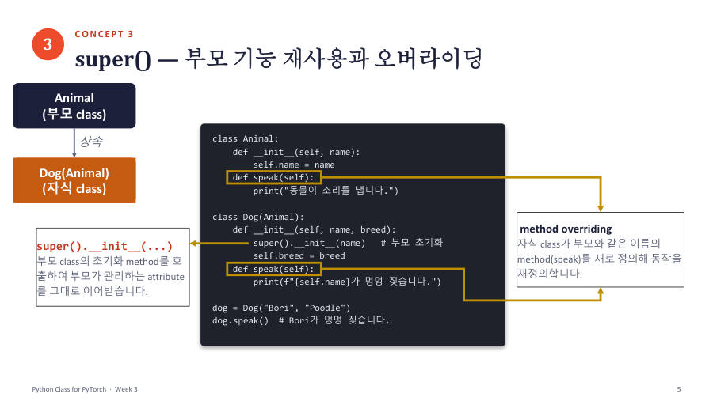

오버라이딩 — 같은 이름 메서드를 자식이 새로 쓰기 ★★★ 시험 2번
자식 class가 부모와 같은 이름의 메서드를 새로 정의하면 호출할 때 자식 것이 먼저 쓰여요. 이것이 오버라이딩(overriding)(재정의)이에요. 앞에서 본 __init__을 자식이 다시 쓴 것도 오버라이딩이에요.

시험 샘플 2번 코드예요. 직접 따라가 봐요.
| 실행하는 줄 | 무슨 뜻 |
|---|---|
dog = Dog("Bori", "Poodle") | Dog의 __init__ 실행. super().__init__(name)으로 부모가 name = "Bori" 저장, 이어서 breed = "Poodle" 저장 |
dog.speak() | Dog에 speak가 있으니 자식 것이 실행돼요. 부모의 speak는 실행되지 않아요 |
| 출력 | Bori가 멍멍 짖습니다. 한 줄뿐이에요. "동물이 소리를 냅니다."는 찍히지 않아요 |
이제 선택지를 하나씩 판정해 볼게요.
| 선택지 | 판정과 이유 |
|---|---|
| ① dog.speak()은 부모와 자식의 speak()을 차례로 실행한다 | 틀림. 자식 것 하나만 실행돼요(부모 것은 호출하지 않아요) |
| ② 자식이 __init__()을 정의해도 부모의 __init__()은 항상 자동으로 실행된다 | 틀림. 자식이 정의하면 자동 실행되지 않아서 super()로 불러야 해요 |
| ③ Dog가 speak()를 재정의했으므로 부모의 speak()은 더 이상 호출할 수 없다 | 틀림. Animal 객체로는 부모 speak를 쓸 수 있고, 자식 안에서 super().speak()로도 부를 수 있어요 |
| ④ super().__init__(name)은 부모의 초기화 메서드를 실행하며, dog.speak()은 자식이 재정의한 메서드를 실행한다 | 맞음 (정답) |
| ⑤ 상속받은 메서드를 쓰려면 먼저 Animal 인스턴스를 별도로 만들어야 한다 | 틀림. Dog 객체가 상속받은 메서드를 이미 가지고 있어서 따로 만들 필요 없어요 |
③번의 super().speak()를 확인해 볼게요. 자식이 부모 기능을 먼저 쓰고 자기 일을 덧붙이는 모양이에요.
여기서는 자식이 직접 super().speak()를 호출했기 때문에 부모 것이 실행됐어요. 호출하지 않으면 실행되지 않는다는 점이 ①번의 오답 이유예요. 그리고 이름을 speak2처럼 바꾸면 다른 메서드가 새로 생길 뿐 오버라이딩이 아니에요.
자식 class에 부모와 같은 이름의 메서드를 정의하면 자식의 메서드가 우선 사용되며 이를 오버라이딩이라고 한다. 이때 부모의 메서드는 호출되지 않는다(자식이 super()로 부를 때만 예외). 설명형 선택지는 "자동으로", "항상", "더 이상 ~할 수 없다" 같은 단정적인 표현이 있으면 반례를 먼저 떠올려 보세요.
잠깐 확인 — 자식 class에 부모와 같은 이름의 speak()를 만들고 dog.speak()을 호출하면 어느 것이 실행되나요?
자식의 speak()이에요. 같은 이름이면 자식 것이 우선이에요.
화면을 가리고 "오버라이딩 — 같은 이름 메서드를 자식이 새로 쓰기 ★★★ 시험 2번"을(를) 친구에게 설명하듯 한 문장으로 말해 보세요. 막히면 위의 빨간 칸만 다시 보고 넘어가요.
자료: 3~4주차 · Week03_Class_for_PyTorch(pdf, ipynb 업데이트본) · 빅데이터03(3주차)·빅데이터04(4주차) 녹취